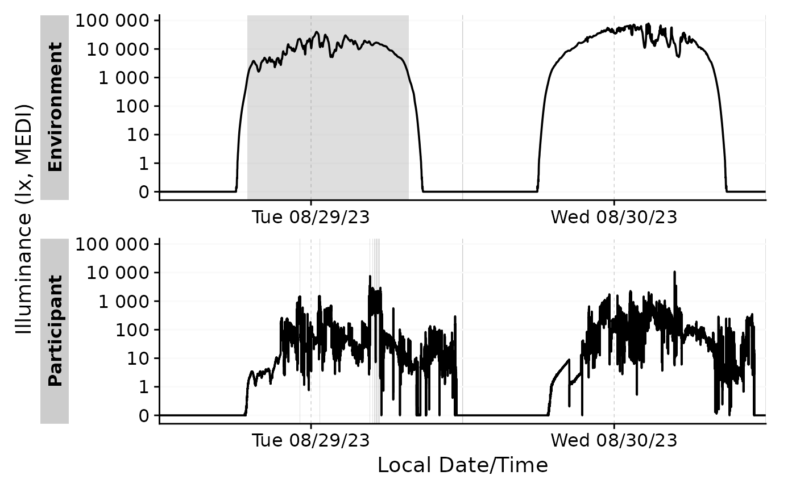

Add states to a dataset based on groups and start/end times
Source:R/extract_states.R
add_states.Rdadd_states() brings states to a time series dataset. It uses the
States.dataset to add states to the dataset. The States.dataset must at
least contain the same variables as the dataset grouping, as well as a
start and end time. Beware if both datasets operate on different time zones
and consider to set force.tz = TRUE.
Usage
add_states(
dataset,
States.dataset,
Datetime.colname = Datetime,
start.colname = start,
end.colname = end,
force.tz = FALSE,
leave.out = c("duration", "epoch")
)Arguments
- dataset
A light logger dataset. Needs to be a dataframe.
- States.dataset
A light logger dataset. Needs to be a dataframe. This dataset must contain the same variables as the
datasetgrouping, as well as a start and end time. Any other column, that is not inleave.outwill be added to the dataset.- Datetime.colname
The column that contains the datetime. Needs to be a
POSIXctand part of the dataset.- start.colname, end.colname
The columns that contain the start and end time. Need to be
POSIXctand part of theStates.dataset.- force.tz
If
TRUE, the start and end times of theStates.datasetwill be forced to the same time zone as thedatasetusinglubridate::force_tz(). IfFALSE(default), the start and end times of theStates.datasetwill be used as is.- leave.out
A character vector of columns that should not be carried over to the
dataset
Value
a modified dataset with the states added. The states are added as
new columns to the dataset. The columns are named after the columns in
the States.dataset, except for the start and end times, which are
removed.
Details
Beware if columns in the dataset and States.dataset have the same name
(other then grouping variables). The underlying function,
dplyr::left_join() will mark the columns in the dataset with a suffix
.x, and in the States.dataset with a suffix .y.
Examples
states <-
sample.data.environment |>
filter_Date(length = "1 day") |>
extract_states(Daylight, MEDI > 1000)
states |> head(2)
#> # A tibble: 2 × 7
#> # Groups: Id, Daylight [1]
#> Id Daylight state.count epoch start end
#> <fct> <lgl> <chr> <dbl> <dttm> <dttm>
#> 1 Environment FALSE FALSE 1 30 2023-08-28 23:59:53 2023-08-29 06:57:53
#> 2 Environment FALSE FALSE 2 30 2023-08-29 19:45:23 2023-08-29 23:59:53
#> # ℹ 1 more variable: duration <Duration>
#add states to a dataset and plot them - as we only looked for states on the
# first day (see above), only the first day will show up in the plot
sample.data.environment |>
filter_Date(length = "2 day") |>
add_states(states) |>
gg_days() |>
gg_state(Daylight)
